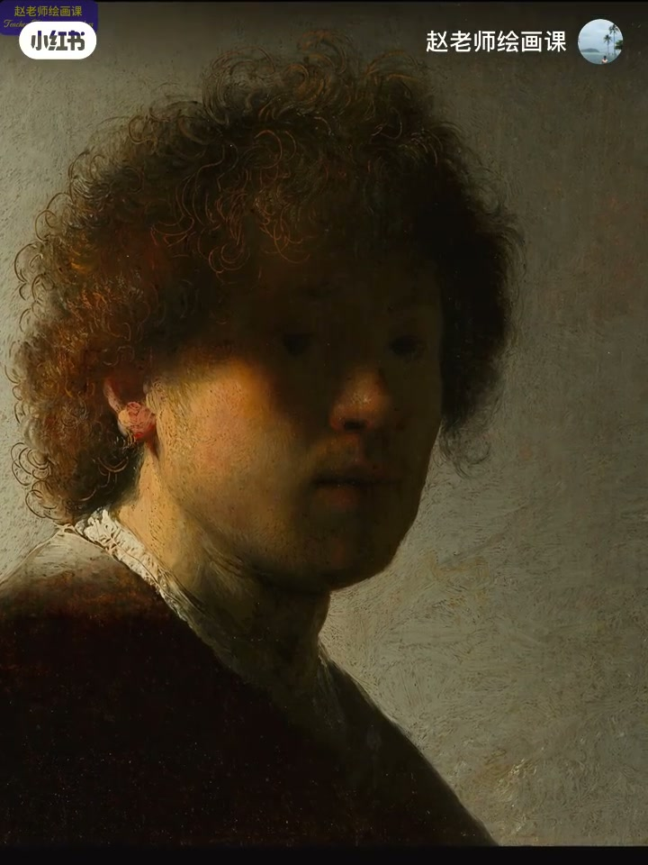
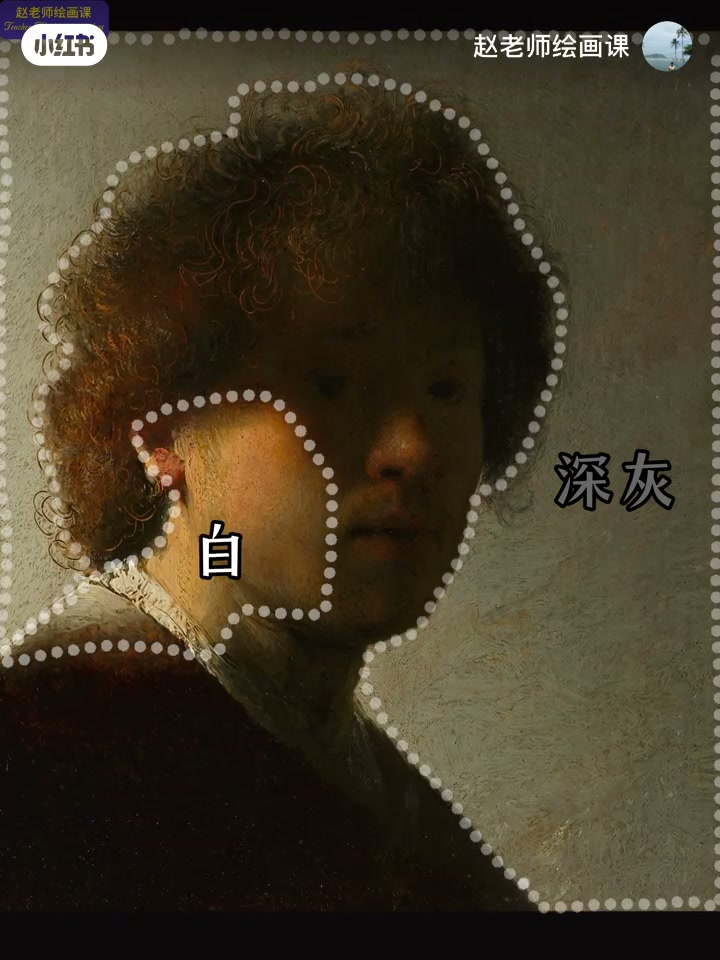
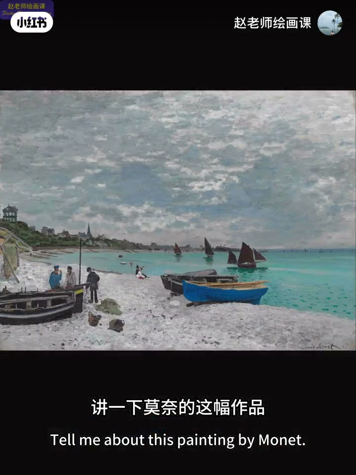
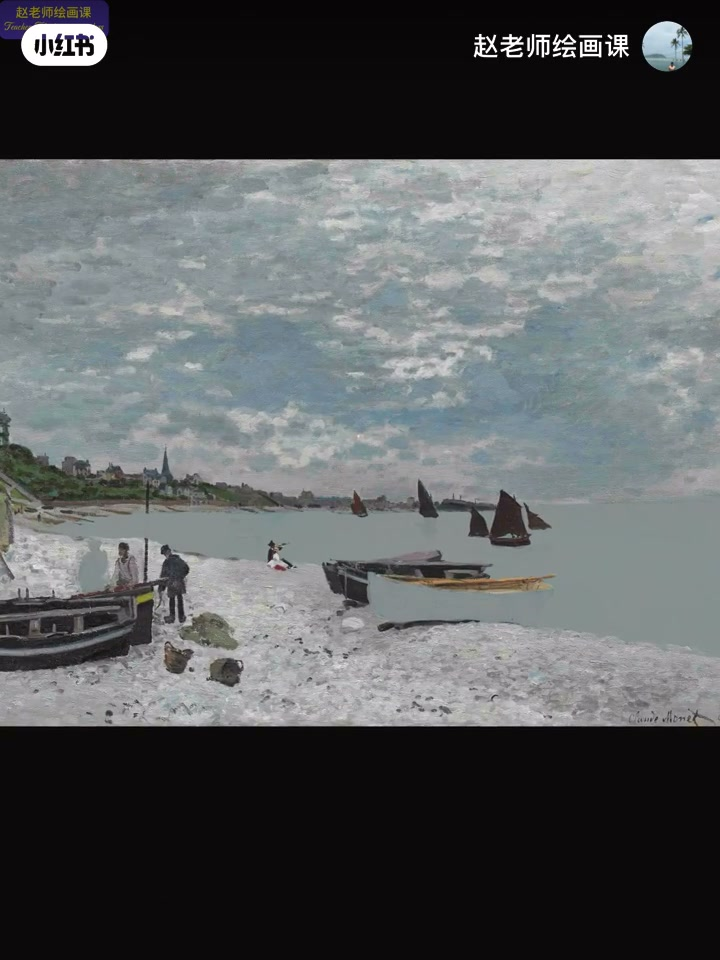

内容要点
生活里嘈杂后想安静、紧张后想放松，是心理平衡；画里也一样。伦勃朗自画像大半脸没入黑影却不沉闷——用深灰背景与格外亮的脸颈做白灰穿插，既丰富黑、又避免沉重，并用亮暗对比锁住深邃眼神。莫奈阴天风景：去掉高饱和更「阴」却无趣单薄，小面积纯与大面积灰才构成视觉平衡。经典可从构图造型色彩任一角度成典范；题外话回到向大师学的感受力。
知识结构
白灰平衡黑；对比造神秘焦点。
小纯大灰保阴天气氛又耐看。
向大师动笔思考；感受与原理共鸣。
平衡不是平均：用对立因素（白灰对黑、纯对灰）互相托住，既保住情绪基调，又避免沉闷或单薄。
00:00-02:02伦勃朗：用白灰平衡黑
课宣后入题：色彩平衡。嘈杂想安静、调休工作日周末想美食——紧张与放松对冲即心理平衡。伦勃朗著名自画像：大半张脸与头发衣服藏进黑影，神秘肃穆。答案在黑白平衡。
背景深灰，脸与脖子格外亮——白与灰穿插让黑丰富厚重，避免黑导致的沉重；去掉白或灰任一，效果大打折扣。亮块强对比下，暗影眼神更深邃：想看清又看不清。作者猜测二十二岁的他以此隐喻将改写美术史的才华。00:41／01:06／01:20。


02:02-02:53莫奈：小纯大灰视觉平衡
应粉丝要求解构莫奈：先试着去掉饱和度较高的色彩——阴天灰调更彻底，也更无趣单薄。故小面积的纯与大面积的灰构成视觉平衡：不否定阴天情绪，又舒服耐看。
经典画作从构图造型色彩形式任一角度都可成典范；此画黑白、形状、面积、疏密同样优秀。02:06／02:23。


02:53-03:55向大师学：感受与思考
题外话：童年学画时老师反复看《向大师学会画》，具体答语已记不清，但潜移默化让人学着像大师一样动笔思考；即便偶尔装腔，长此以往受益，常因生活与艺术原理共鸣而激动。
带感受和思考学习艺术，会为生命增添不一样的色彩。三连收束。
完整转录（77段）
以下文本由 Whisper medium 模型自动转录，可能存在少量识别误差，已尽可能修正。
先通知一下我的色彩系统课6月30号开课
内容丰富 讲练结合
很适合想彻底弄懂色彩原理和应用的同学
以及对色彩审美提升有需求的朋友
今天我们聊聊色彩平衡
说到平衡 举个例子
当我们在嘈杂的环境中待久了
就特别想换一个安静的地方
调休导致家常的工作日
周末需要一顿可口的美食
让紧张与放松对冲
达到一种心理平衡
那 什么是色彩平衡
来 看看画作
这是伦伯朗最著名的自画像之一
画中 大半张脸与头发 衣服
完全隐藏在黑色的影子里
显得神秘而肃穆
画家是怎么做到的
其实 答案就藏在黑白平衡中
第一 画家将背景设定为深灰
又将脸部与脖子区域处理得格外亮眼
如此 白与灰的穿插让黑显得丰富而厚重
也有效避免了黑可能导致的沉重感
如果去掉白灰其中的任何异种
画面效果一定会大打折扣
第二 在亮快的强对比下
暗影中的眼神更加深邃
让人有种想要看清又看不清的神秘感
用对比制造视觉焦点
让画面既有视觉冲击 有耐人寻味
使大师们惯用的手法
如此加持让观者无法从他的眼神中逃离
我猜 这可能就是22岁的伦伯朗
想要告诉世人
他的智慧与才华
将会改写美术史的隐喻版
用白和灰来平衡黑 同时对比黑
这就是伦伯朗笔下的色彩黑白平衡
应粉丝要求 讲一下莫奈的这幅作品
想要解构这幅画中的色彩平衡
我们先试著去掉一些饱和度较高的色彩
感觉怎么样
阴天的灰调似乎更加彻底了
再看
好像也更加无趣和单薄了
所以小面积的唇和大面积的灰
构成了视觉平衡
既没有否定阴天的情绪氛围
又让人觉得舒服有耐看
其实一幅经典画作
从构图 造型 色彩 形式等任何角度
都可以成为典范
这幅画中除色彩之外的黑白
形状 面积 疏密等等都是非常优秀的
几句题外话
大家对于大师作品的好奇与求知
也让我想起了我孩童时期的学画经历
那是一个平淡无奇的下午
我正紧张地挑战著阿德涅复杂的头发体块关系
但老师则一言不发
专心地看著他那本向大师学会画
我有点不耐烦
疑惑地问 为什么总看这一本书
他的回答我已经记不清楚
但老师潜移默化的影响
让我总喜欢学著像大师一样动笔和思考
即使有的时候有点装腔作势
但长此以往使我受益匪浅
习惯了思考
我常常因为生活中的事物
与艺术原理之间引发的共鸣而激动不已
总之 带著感受和思考
学习艺术 了解艺术
它一定会为我们的生命增添不一样的色彩
人创不易 感谢三联
下期见 拜拜